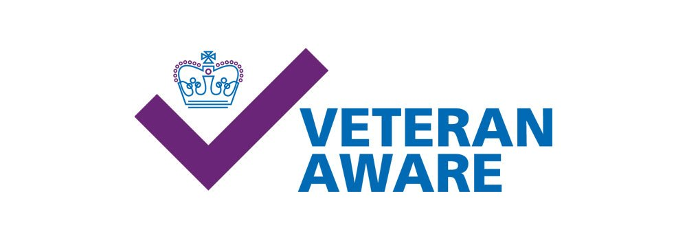
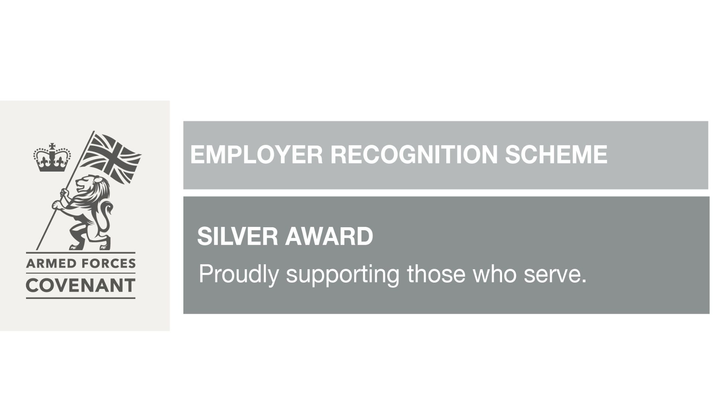

Welcome to the HM Forces Veterans & Armed Forces Hub
As part of the NHS family, we recognise the invaluable skills and experiences that you, our colleagues who are HM Forces Veterans, Reservists, Cadet Volunteers, and Armed Forces family members, bring to our organisation.
In this dedicated Hub, you will find information, links, and resources designed to support our Armed Forces community across our Trust.
Recording Your Status in ESR
Ensuring we can provide tailored support by updating your status on the Wellbeing form.
Special Leave Policy
View our Trust Special Leave Policy (HR04 v4.3) covering reservists, cadet volunteers & special leave.
Armed Forces Health Training
Access NHS Armed Forces healthcare training (Module 1) delivered with regional VCHA trainers.
Armed Forces Staff Network
Connect with veterans, reservists & supporters in a friendly, welcoming monthly online space.
Armed Forces Covenant & ERS
Our organizational pledge and the Defence Employer Recognition Scheme (ERS) award recognition.

